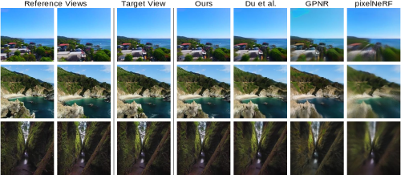
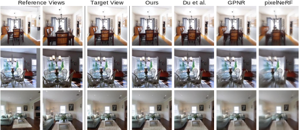

pixelSplat: 3D Gaussian Splats from Image Pairs for Scalable Generalizable 3D Reconstruction
TL;DR
Abstract
We introduce pixelSplat, a feed-forward model that learns to reconstruct 3D radiance fields parameterized by 3D Gaussian primitives from pairs of images. Our model features real-time and memory-efficient rendering for scalable training as well as fast 3D reconstruction at inference time. To overcome local minima inherent to sparse and locally supported representations, we predict a dense probability distribution over 3D and sample Gaussian means from that probability distribution. We make this sampling operation differentiable via a reparameterization trick, allowing us to back-propagate gradients through the Gaussian splatting representation. We benchmark our method on wide-baseline novel view synthesis on the real-world RealEstate10k and ACID datasets, where we outperform state-of-the-art light field transformers and accelerate rendering by 2.5 orders of magnitude while reconstructing an interpretable and editable 3D radiance field.
Comparison vs. Baselines
We compare our method against the following baselines:
- The Method of Du et al.: A light field renderer designed for wide-baseline novel view synthesis.
- GPNR: A light field transformer which struggles with only two input views.
- pixelNeRF: A well-known NeRF-based approach which struggles on scene-scale datasets because it does not handle scale ambiguity.
ACID Dataset
Real Estate 10k Dataset
3D Gaussian Point Clouds
Because pixelSplat infers a set of 3D Gaussians, we can visualize these Gaussians and render them to produce depth maps. Since the Real Estate 10k and ACID datasets contain many areas with ambiguous depth (e.g., large, textureless surfaces like interior walls), we fine-tune pixelSplat for 50,000 iterations using a depth regularizer before exporting 3D Gaussian point clouds.